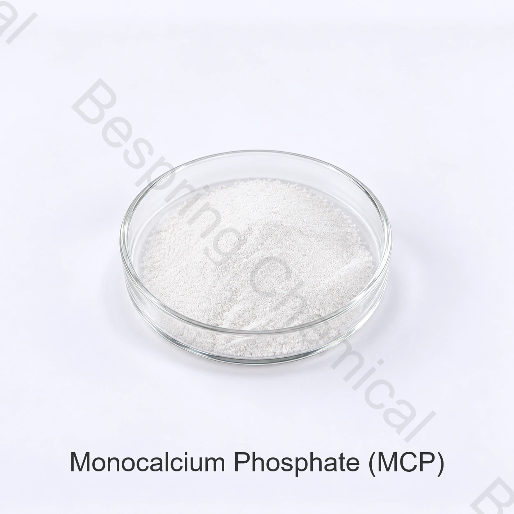

食品級無水MCP/AMCP
CAS 7758-23-8
無水化學是單獨的。緩慢反應的 AMCP 通常是經過特殊塗層/處理的等級;僅憑“無水”並不能證明反應緩慢。
食品 膨鬆磷酸鹽 · E341(i) / INS 341(i)
供應雙氫磷酸鈣一水合物，用於合格的烘焙膨鬆、麵糰系統和食品配方。請註明CAS 10031-30-8,中和值，反應特性和顆粒要求，而不僅僅是“MCP 磷酸二氫鈣 ” 。
百泉供應食品級磷酸二氫鈣（MCP）的無水和單水兩種形態。詢價時請註明所需形態。本頁原有針對特定形態的參數，不應未經確認直接用於另一種形態。

產品圖片 · 訂購時請確認等級與包裝
兩種形態均供應。請確認所需形態、規格及目的地市場；下方原有形態專屬參數不能直接用於另一形態。
可橫向滑動或使用鍵盤查看完整表格
| 形態 | CAS | 化學式 |
|---|---|---|
| 無水 | 7758-23-8 | Ca(H₂PO₄)₂ |
| 單水 | 10031-30-8 | Ca(H₂PO₄)₂·H₂O |
*商業來源參考;必須重新確認簽署的來源規格和方法。
鎖定物質身份一水合物 CAS 10031-30-8
膨鬆配合中和值和所需氣體時間
規格比較含量基準與檢測方法
供應參考25公斤袋;23噸/20英尺FCL*
產品身份
一水磷酸二氫鈣（MCP或MCPM），標準化名稱為磷酸二氫鈣，是水合酸式磷酸鈣，分子式為Ca(H2PO4)2·H2O。JECFA 將該一水合物列為 CAS 10031-30-8，INS 編號為 341(i)。
JECFA列出緩衝，堅硬，螯合劑，膨鬆，麵糰調理，紋理，酵母食品和營養功能。在化學膨鬆中，水使MCP磷酸二氫鈣和碳酸氫鈉發生反應，釋放出二氧化碳;生產成功與否取決於準確的中和和氣體釋放特性。
區分水合形式與用途
該縮寫在不同水合形式、塗層膨鬆等級和動物營養產品中共享。僅憑配方並不能確定食品用途或預測反應時間。
CAS 10031-30-8
主要用途：食品級識別，快速膨鬆評估和所提供的一水合物對齊鈣規格。
CAS 7758-23-8
無水化學是單獨的。緩慢反應的 AMCP 通常是經過特殊塗層/處理的等級;僅憑“無水”並不能證明反應緩慢。
動物營養意圖
飼料磷/鈣、消化性、氟、顆粒和註冊要求不符合食品加工材料的資格。
接收控制： 購買說明、標籤、批次、規格和COA必須都標明相同的水合物形態和食品級來源。不得使用農業或飼料證書釋放材料。
評估烘焙效能，不能只看商品含量
中和值(NV)表示100份膨鬆酸中和碳酸氫鈉的質量。行業參考通常給出MCP磷酸二氫鈣一水合物NV在80左右，但合同價值和方法必須來自所提供的確切等級。
使用認證的 NV 計算起始比率。然後在測量成品pH值、味道、顏色和殘餘鹼度/酸度後進行調整。
MCP 磷酸二氫鈣單水一般被篩選為快速作用的酸。在結構固化之前，在混合、轉移和實驗室小試保持過程中追蹤氣體損失。
當需要爐級氣體時，MCP 磷酸二氫鈣可用緩慢膨鬆的酸進行評估。從各自的NV計算每種酸，並透過烘烤測試確認總反應。
粒徑、塗層/處理、溼度、溫度、水的可用性、麵糰黏度和成分順序可能會改變表面反應特徵。
特定應用篩選
這些是技術篩選路徑，而不是普遍許可或保證的結果。
設定NV,氣釋分離，顆粒相容性，隔離，溼度保護和貨架反應。在預定的包裝和儲存期限後進行測試。
在實際混合和烘烤曲線下評估早曝氣、實驗室小試時間、比體積、氣孔結構、對稱性、麵包芯、顏色、pH值和味道。
測量擴散、表面、顏色、質構和殘餘味道。反應平衡會影響烘焙和麵團處理以及升力。
當用於營養、緩衝或固化功能時，根據認證成分計算鈣和磷，並測試溶解度、感官和完整配方標籤。
商業參考規格
下表區分商業參考值與 JECFA 要求；部分分析基準及方法須在簽署規格中明確，不能據此宣稱整體符合 JECFA。
可橫向滑動或使用鍵盤查看完整表格
| 專案 | 提供/規範化值 | 採購比較要點 |
|---|---|---|
| 外觀 | 白色結晶粉末或片狀結晶 | 不反映JECFA“晶體、顆粒或顆粒狀粉末 ” ; 確認準確等級 |
| 鈣(Ca) | 15.9–17.7% | 符合JECFA一水合物含量測定;支援一水合物—非無水體—特性 |
| P2O5 | 50.0–52.5 % | 基礎和方法不明；使用前與簽字原件核對 |
| CaO | 19.0–24.8% | 廣泛範圍並非始終是從所述鈣範圍得出的；澄清報告依據 |
| 鑑別 | 陽性 | 需要單獨的鈣和磷酸鹽方法 |
| 砷 | ≤0.0003% (=3 mg/kg) | 在數量上與JECFA最大相符 |
| 氟化物 | ≤0.0001% (=1 mg/kg) | 比 JECFA 50 mg/kg 嚴格；須在簽署規格中明確單位及方法 |
| 重金屬(以Pb計) | ≤0.0015% (=15 mg/kg) | 傳統綜合指標，不能替代具體元素的檢測 |
| 鉛 | ≤0.0005% (=5 mg/kg) | 不符合JECFA規定的最大值4毫克/千克 |
| 鎘/汞 | 各≤0.0001% (=1 mg/kg) | 商業領域；確認目的地限制和方法 |
| “灼燒失重” | ≤1.0% | 方法標籤與JECFA不符：一水合物在60°C／3小時條件下乾燥失重（LOD）≤1%；無水物在800°C／30分鐘條件下灼燒失重（LOI）為14.0–15.5% |
| “加熱損失” | ≤17.0% | 方法和水合解釋未決 |
| 澄清度／碳酸鹽／可解離鹽類 | 透過 | 提供樣品製備、終點和源標準 |
鉛超過JECFA參考值，損耗測試相互衝突，缺少關鍵的識別/純度方法。獲取簽名的原件和具體貨源的報價，以滿足所選標準之前的批准。
一水合物：Ca 15.9–17.7 % , LOD ≤1 % , 60°C 3小時;兩種形式：氟化物 ≤50,砷 ≤3 和鉛 ≤4 mg/kg,加上身份測試。
審查JECFA MCP專著請求NV方法，反應速率分佈圖，顆粒分佈，堆積密度，水分行為，漿液pH值，不溶性物質，微生物(如需要 ) , 保質期和塗層/未塗層狀態。
從實驗室到生產線的驗證批准
要求食品級一水合物，CAS 10031-30-8,來源標準，標籤，簽名規格和批次可追溯性。
從提供的品級計算起始碳酸氫鹽比例，同時考慮其他配方中的酸和鹼成分。
使用匹配的水、溫度、混合器和保持時間來跟蹤早期和總氣體釋放，而不僅僅是最終的含量測定。
對照已批准的基準，比較體積、氣孔、對稱性、攤展程度、顏色、pH、質構與口感。
測試溼度、包裝、儲存時間、分離和過早的酸-碳酸氫鹽反應。
同意身份、Ca 含量測定、雜質、NV/反應、顆粒分佈和COA欄位與方法和變更控制。
儲存與操作
採購常見問題
本網址現主要涵蓋食品級一水磷酸二氫鈣，CAS 10031-30-8。百泉化工為無水 MCP 磷酸二氫鈣，CAS 7758-23-8 設有單獨頁面，供比較不同水合形式與採購要求。
無塗層MCP磷酸二氫鈣一水合物一般被篩選為快速作用，但實際配置取決於等級、粒徑、處理/塗層、溼度和製程。商用塗層無水 MCP 磷酸二氫鈣可設計為緩慢釋放，請索取反應資料。
NV是碳酸氫鈉中和於100份膨鬆酸的質量部分。一個行業參考通常列出了大約80的MCP磷酸二氫鈣一水合物，但採購和配方必須使用認證值提供的等級。
不符合書面說明。所提供的鉛限值為5 mg/kg,而JECFA的最高限值為4 mg/kg,損耗測試標籤相互衝突，而且若干方法未定義。需要更正具體貨源的規格。
說明食品級一水合物，CAS 10031-30-8,目標標準，NV和反應特徵，粒徑，烘焙應用和製程，數量，25公斤包裝/托盤需求，目的地，國際貿易術語和證書。
以身份和效能為導向的採購
包括確切的身份和膨鬆方法，這樣報價不會與無水或飼料級MCP磷酸二氫鈣混淆。
請提供產品等級和目的地市場，以便確認適用於該訂單的資料。
外部參考資料不等於批次分析證書或百泉產品規格書。